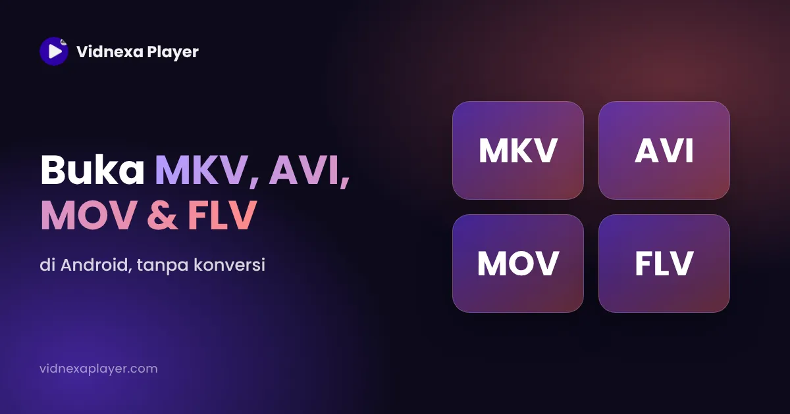

Cara Membuka File MKV, AVI, MOV dan FLV di Android
▶ Unduh Vidnexa di Google Play
Galeri ponsel bisa membuka MP4 tanpa masalah, tapi menolak film .mkv, file .avi lama, video .mov dari iPhone atau unduhan .flv. Ini penjelasan tiap format dan cara membukanya.

Kenapa ponsel tidak bisa membuka file ini?
MKV, AVI, MOV dan FLV adalah wadah (container): kotak berisi video, audio dan kadang subtitle. Di dalamnya, video dan audio bisa memakai banyak codec berbeda. Aplikasi galeri bawaan biasanya hanya menangani kombinasi paling umum (MP4 dengan H.264 dan AAC). Pemutar dengan decoder sendiri bisa membuka jauh lebih banyak.
Cara membuka file MKV di Android
MKV (Matroska) populer untuk film dan serial karena bisa menyimpan beberapa bahasa audio dan subtitle dalam satu file. Isinya sering video HEVC dengan audio AC3 atau E-AC3. Buka di pemutar dengan decoder bawaan, lalu pilih trek audio dan subtitle dari menu pemutaran. Selengkapnya: cara memutar file HEVC dan MKV di Android.
Cara membuka file AVI di Android
AVI adalah format lama dari Microsoft, umum di unduhan dan rekaman kamera lama. File AVI sering memakai video Xvid atau DivX dengan audio MP3 atau AC3, yang tidak didekode sebagian ponsel modern. Pemutar dengan dukungan codec luas memutarnya apa adanya.
Cara membuka file MOV di Android
MOV adalah format QuickTime milik Apple, jadi biasanya muncul saat seseorang mengirim video dari iPhone. iPhone baru merekam dalam HEVC, yang tidak bisa didekode secara hardware oleh sebagian ponsel Android lama. Pemutar dengan decoder HEVC sendiri bisa memutarnya. File MOV dari kamera profesional (misalnya ProRes) sangat berat dan mungkin tidak lancar di ponsel.
Cara membuka file FLV di Android
FLV adalah format Flash Video dari awal era video online. Flash sudah tidak ada, tapi file FLV masih muncul di unduhan dan arsip lama. Isinya biasanya H.264 atau codec yang lebih lama. Buka di pemutar yang mendukung FLV; Vidnexa Player mencantumkan FLV di format yang didukungnya.
Langkah demi langkah di Vidnexa Player
- Pasang Vidnexa Player dari Google Play.
- Buka aplikasi dan izinkan akses ke video saat diminta.
- Cari file di daftar video atau tampilan folder, lalu ketuk.
- Jika perlu, pilih trek audio dan subtitle dari Player Controls. Cek juga Media info untuk detail file.

Perlukah file dikonversi?
Biasanya tidak. Konversi butuh waktu dan menurunkan kualitas. Coba pemutar dengan dukungan format luas dulu, dan konversi hanya jika file tetap tidak bisa diputar di mana pun.
Pertanyaan yang sering diajukan
Apakah Android bisa memutar file MKV, AVI, MOV dan FLV?
Bisa, dengan pemutar yang tepat. Aplikasi galeri sering tidak bisa, tapi pemutar dengan decoder bawaan seperti Vidnexa Player memutar keempatnya.
Perlukah AVI atau FLV dikonversi ke MP4?
Biasanya tidak. Coba pemutar dengan dukungan format luas dulu; konversi butuh waktu dan menurunkan kualitas.
Kenapa video MOV dari iPhone tidak bisa diputar di Android?
iPhone baru merekam dalam HEVC, yang tidak bisa didekode secara hardware oleh sebagian ponsel Android. Pemutar dengan decoder HEVC sendiri biasanya bisa memutarnya.
Berapa format yang didukung Vidnexa Player?
Vidnexa Player mendukung 200+ format video dan audio, termasuk MKV, AVI, MOV, FLV, WEBM, MP4 dan video HEVC.
Unduh Vidnexa Player Gratis
Video 4K/8K dengan mode gambar HDR+, musik, file & foto — satu aplikasi gratis diunduh, tanpa daftar akun.
▶ Unduh di Google Play